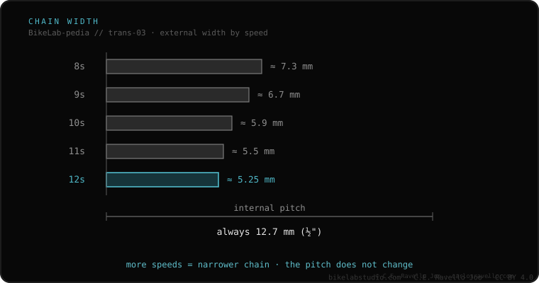

A bike chain narrows as speeds go up: more sprockets on the cassette means less space between them, so the chain must be thinner on the outside. The internal pitch is always the same (12.7 mm, half an inch), but the external width drops from ≈7.3 mm at 8sp to ≈5.25 mm at 12sp. That's why a chain must match your cassette's speed count: too wide and it rubs neighboring cogs and won't shift.
The chain looks like the «dumb» part of the drivetrain, until you fit the wrong width and nothing shifts right.
All chains share the same pitch (the distance between pins), but the external width shrinks with each extra speed to fit tighter cassettes. Some systems also have their own profiles: SRAM Flat-Top (road) has a flat top and Shimano Hyperglide+ (12sp) a specific profile, both designed for their own chainrings and cassettes.

Use the chain for your cassette's speed count. Going one speed down is usually tolerated (an 11sp on a 10sp cassette), up isn't (a 9sp won't fit between 12sp cogs). Across 12sp brands: SRAM Flat-Top and Shimano Hyperglide+ aren't interchangeable without hurting shifting and wear.
If you're unsure which cassette, freehub or chain fits your bike, send us the case. Real diagnosis, nothing to sell you. Message us on WhatsApp
Usually yes: it's a bit narrower, doesn't rub neighboring cogs and works fine. The reverse (10sp on 11sp) isn't recommended.
No. SRAM Flat-Top and Shimano Hyperglide+ have different profiles and want their own chainrings/cassettes to perform.
It must match them. The cassette sets the speed count; the chain just needs the right width for that cassette.
© 2026 BikeLab Studio. Content under CC BY 4.0: you may copy, translate and publish it, even for commercial purposes. Citation is mandatory. Without attribution, the license terminates automatically (CC BY 4.0, §6.a) and the use becomes copyright infringement: we request the removal of the content and its deindexing. · Design and ownership: Carlos Ravello Joo